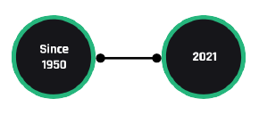

Sobre nós
A gravadora PodCastream foi criada em 1950 com o objetivo principal de pôr à disposição do público as trilhas sonoras das novelas e minisséries televisivas, e ao mesmo tempo incentivar a música popular brasileira, abrindo portas para novos talentos e revitalizando o repertório de músicos tradicionais e consagrados. Durante sua história, lançou nomes importantes da música brasileira como Djavan, Ivan Lins, Novos Baianos, Barão Vermelho e Cazuza. Entre os artistas exclusivos do elenco atual da empresa, estão nomes de sucesso como Jorge e Mateus, Marília Mendonça, Wesley Safadão, Zé Neto & Cristiano, Maiara & Maraísa e Maria Gadú. Nos últimos cinco anos, a PodCastream desenvolveu novas áreas de negócio como licenciamento internacional, digital, selo eletrônico (Austro Music), shows e edição musical, se consolidando como importante fornecedora de conteúdo para televisão, podcasts e outras mídias.